S19. All labels need review. Confidence is unverified. No truth was used for these images.
Read the report · Check all input pages · Last summary · Page results · Check frozen choice · S04 baseline report
651 input pages. 17 pages have demo boxes. 53 column views are shown. The other pages have no reviewed boxes.
Each source column was processed in one call. The pictures show crops of that result. View edges are not bed boundaries.
ul_r4_bw_hatch_oregon_dogami_CC23-04-65_mud_p001: predicted · Legend · Intervals · Confidence record
ul_r4_bw_hatch_oregon_dogami_CC33-03-65_mud_p001: predicted · Legend · Intervals · Confidence record
ul_r4_bw_hatch_oregon_dogami_CC43-34-65-RD_mud-r_p001: predicted · Legend · Intervals · Confidence record
ul_r4_bw_hatch_oregon_dogami_CoosCounty1-7_mud_p001: predicted · Legend · Intervals · Confidence record
ul_r4_bw_hatch_oregon_dogami_Hammerberg1-RD_mud-R_p001: predicted · Legend · Intervals · Confidence record
ul_r4_bw_hatch_oregon_dogami_Keys1_mud1_p001: predicted · Legend · Intervals · Confidence record
ul_r4_bw_hatch_oregon_dogami_OM12C-03-65_mud_p001: predicted · Legend · Intervals · Confidence record
ul_r4_bw_hatch_oregon_dogami_CC12-19-65_mud_p001: predicted · Legend · Intervals · Confidence record
ul_r3_oregon_dogami_Adams24-34-75_mud_p001: predicted · Legend · Intervals · Confidence record
ul_r3_oregon_dogami_Adams31-34-75-RD_mud_p001: predicted · Legend · Intervals · Confidence record
ul_r3_dhi_wister_wister_p002: predicted · Legend · Intervals · Confidence record
ul_r3_precision_wl_log-01_p001: predicted · Legend · Intervals · Confidence record
ul_r3_precision_wl_log-01_p002: predicted · Legend · Intervals · Confidence record
ul_r3_stratagraph_Measured_Depth_Log_Example_p002: predicted · Legend · Intervals · Confidence record
ul_r3_mississippi_mdl123045000360000a-001_p001: predicted · Legend · Intervals · Confidence record
ul_r3_mississippi_mdl123045000360000a-002_p001: predicted · Legend · Intervals · Confidence record
ul_r3_utah_forge_mud_log_p001: predicted · Legend · Intervals · Confidence record
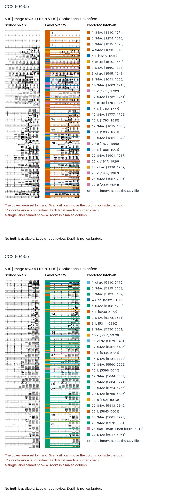
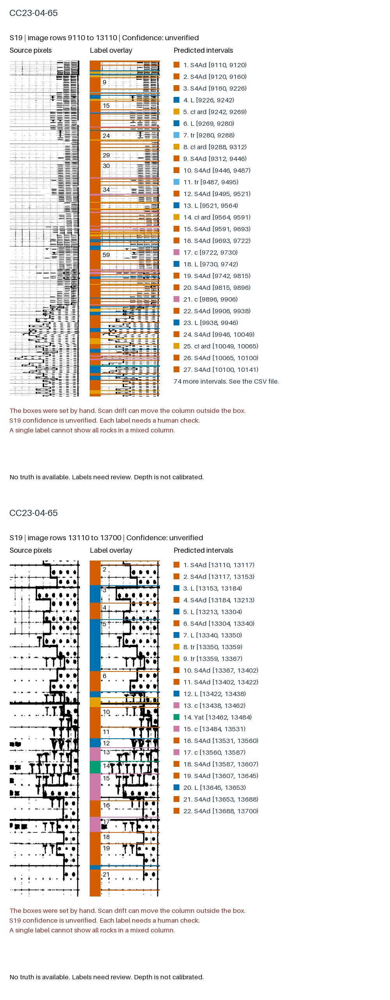
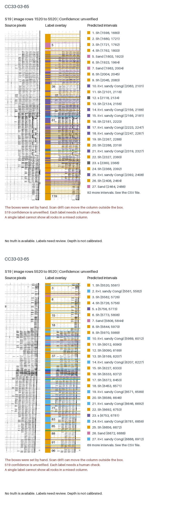
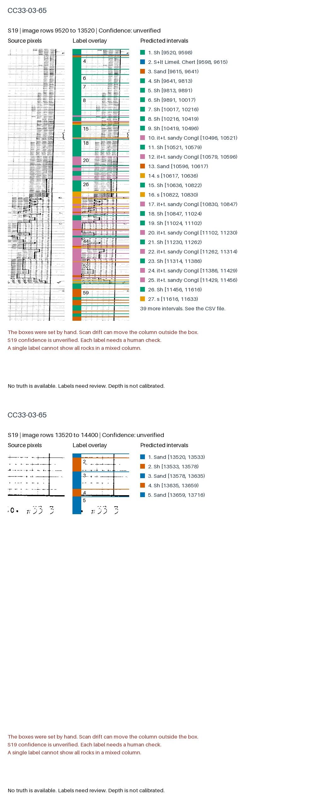
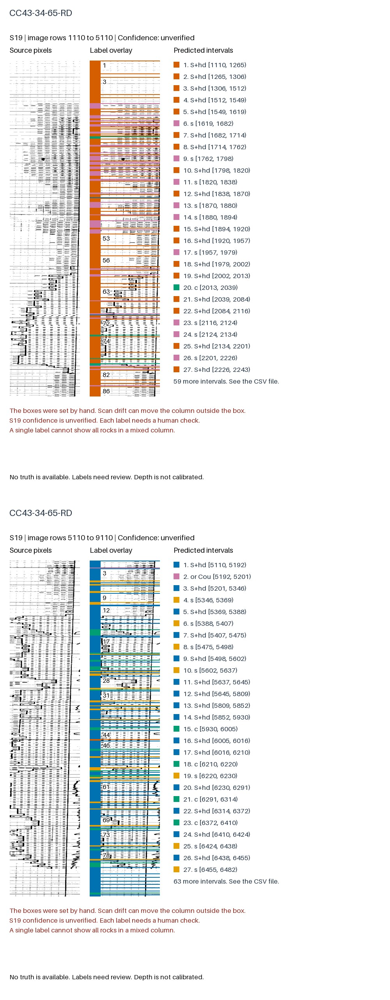
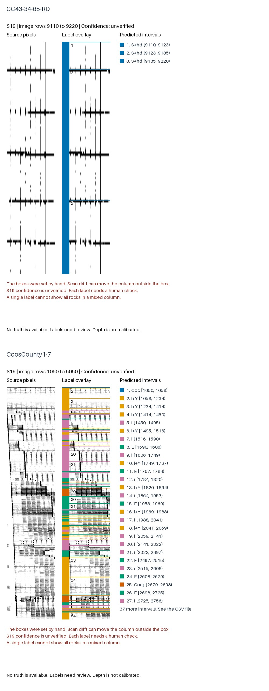
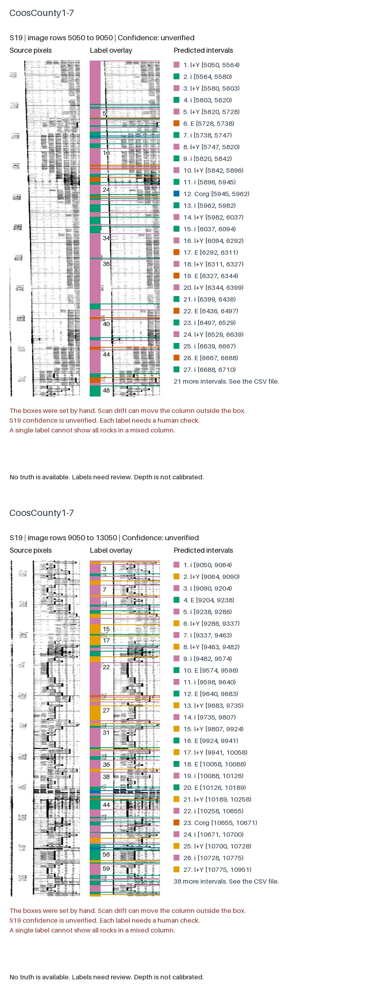
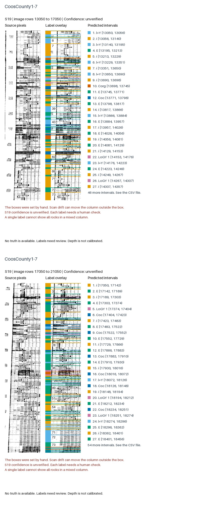
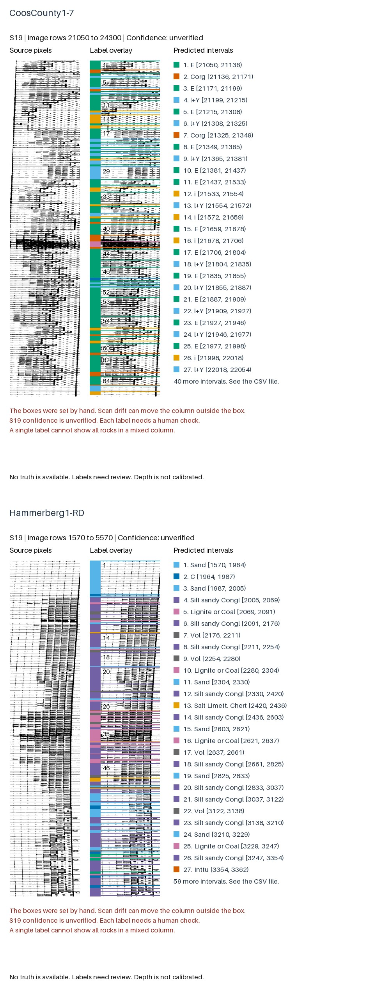
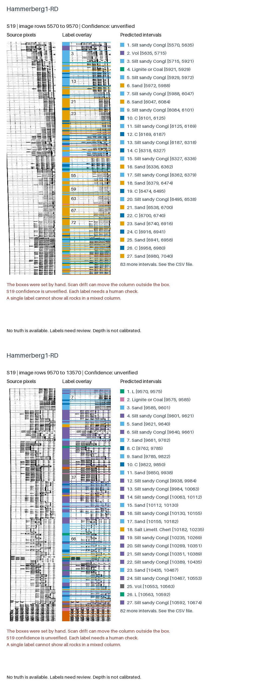
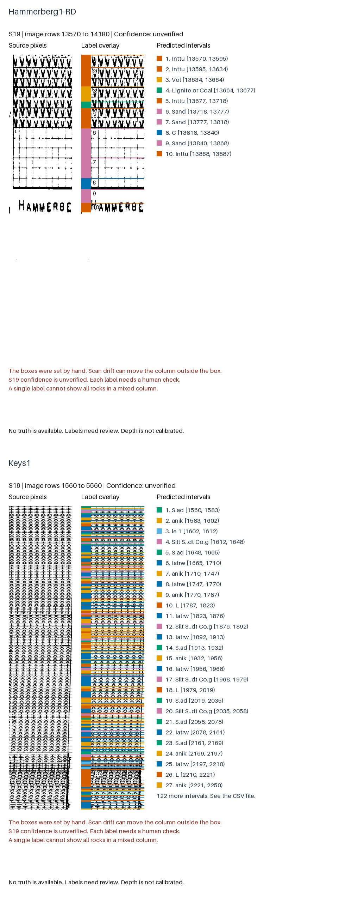
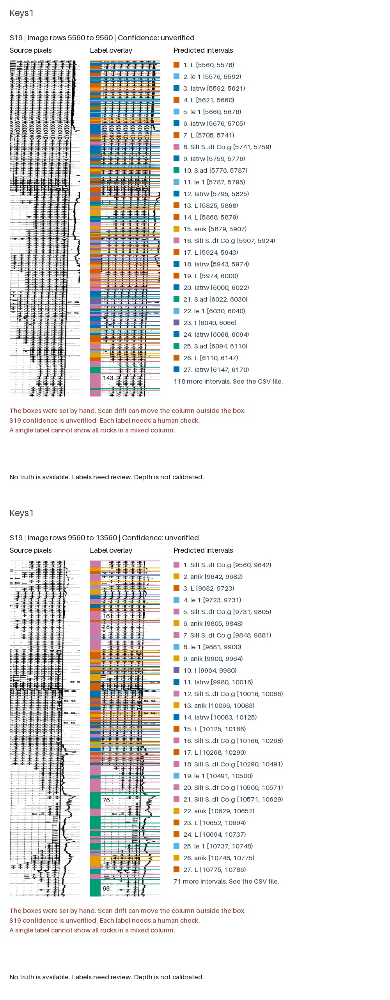
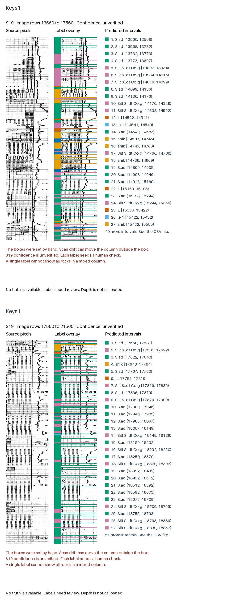
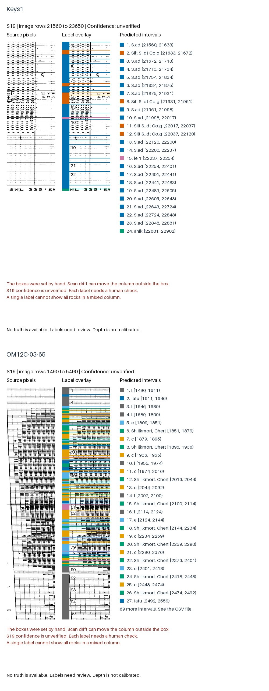
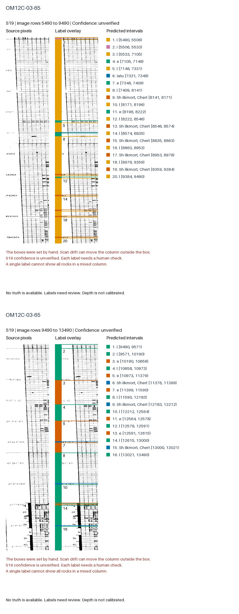
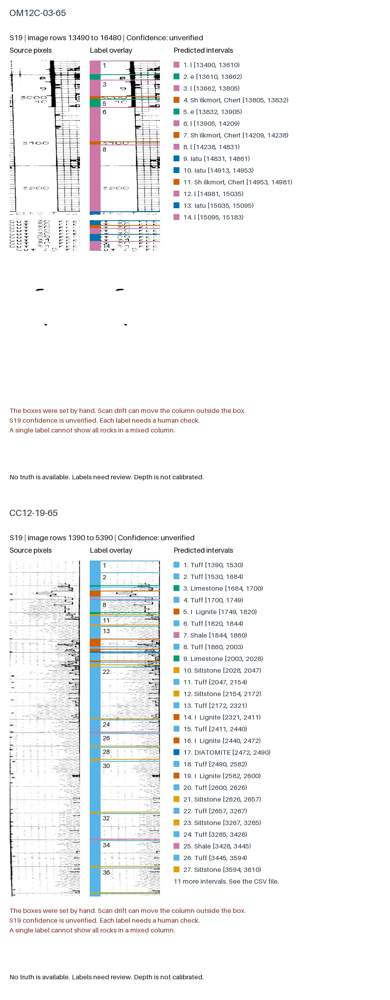
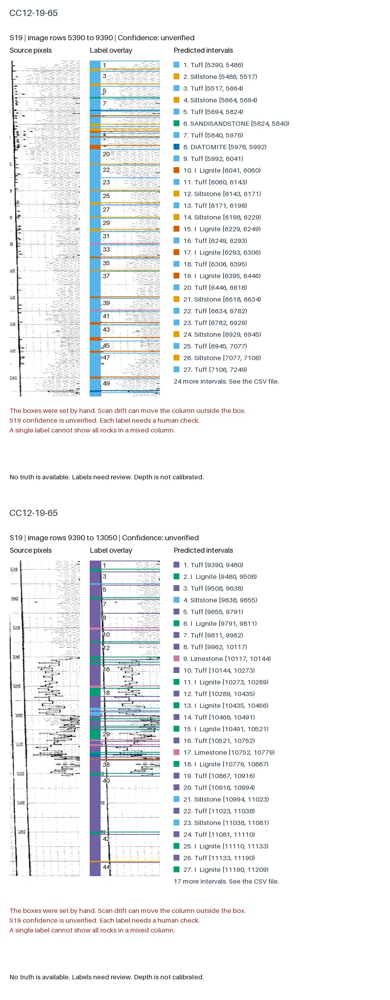
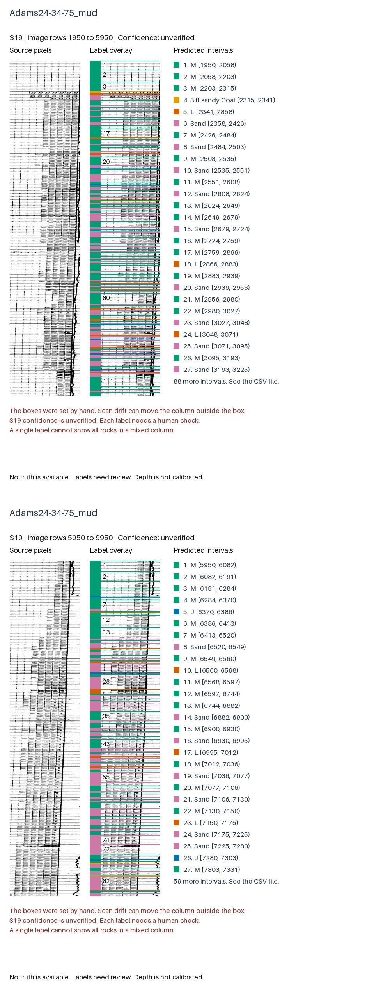
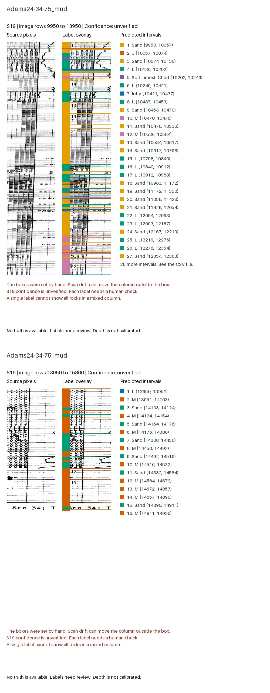
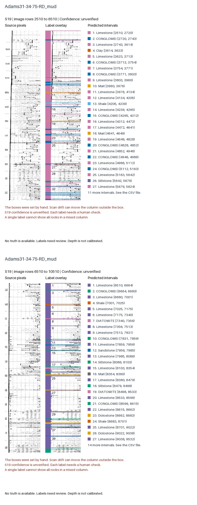
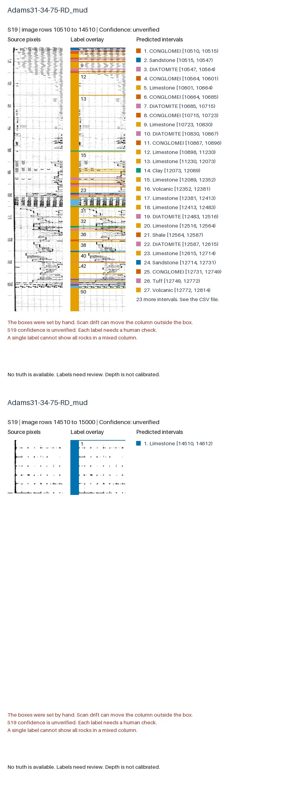
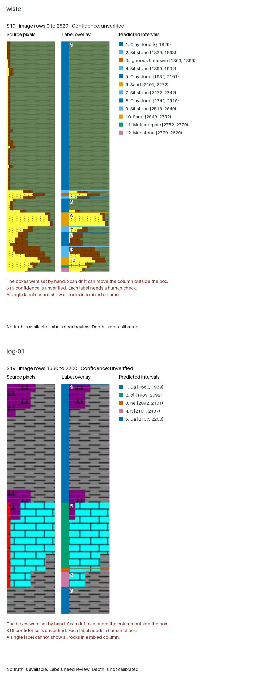
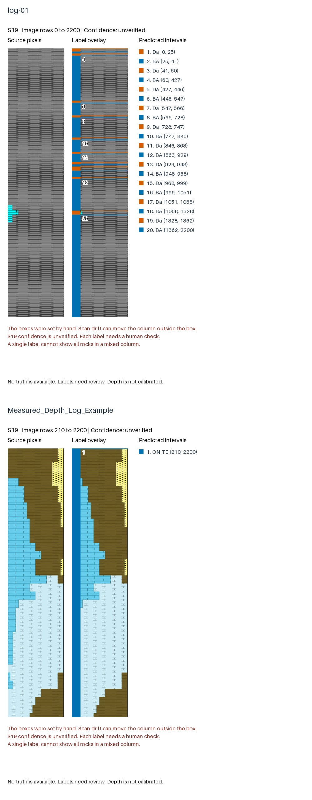
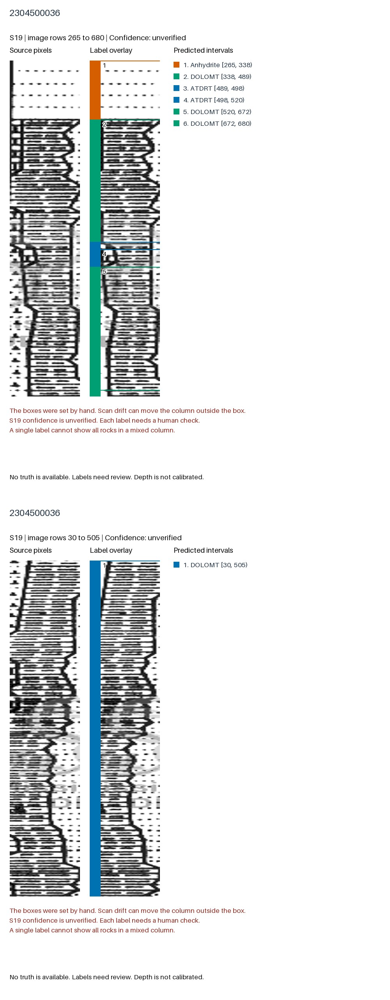
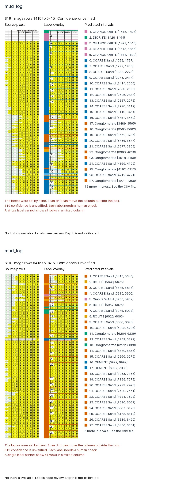
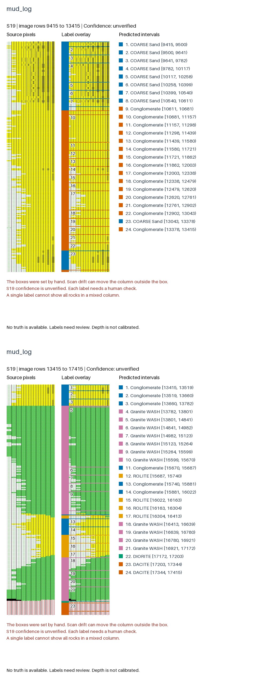
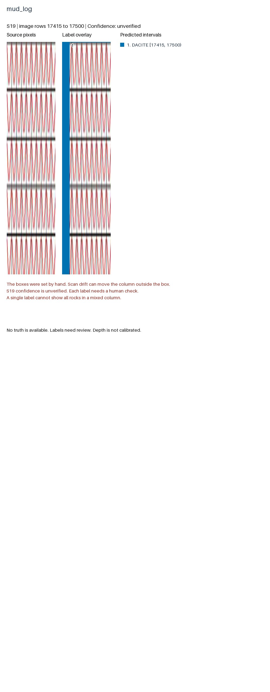